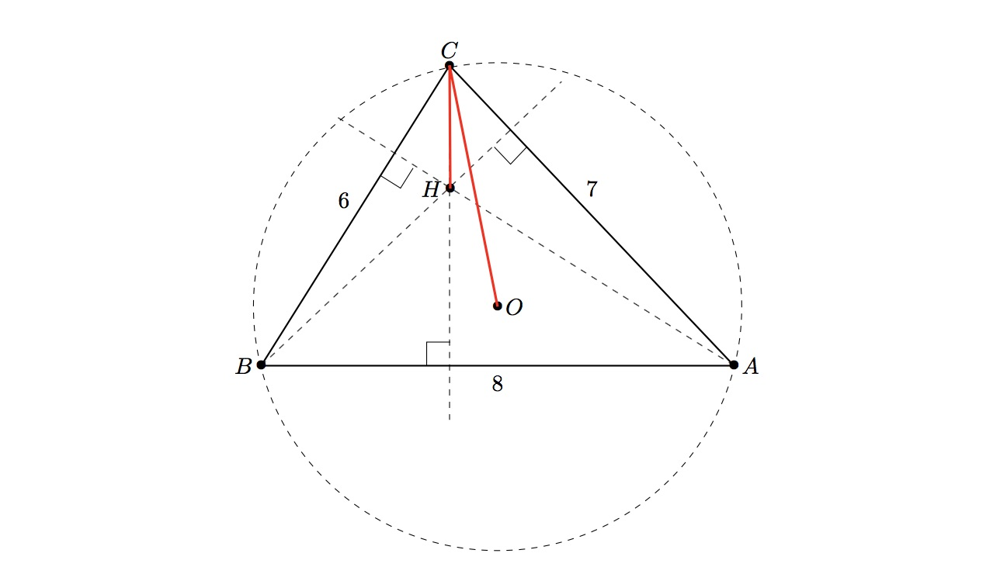

We call a triangle fortunate if it has integral sides and at least one of its vertices has the property that the distance from it to the triangle's orthocentre is exactly half the distance from the same vertex to the triangle's circumcentre.

Triangle $ABC$ above is an example of a fortunate triangle with sides $(6,7,8)$. The distance from the vertex $C$ to the circumcentre $O$ is $\approx 4.131182$, while the distance from $C$ to the orthocentre $H$ is half that, at $\approx 2.065591$.
Define $S(P)$ to be the sum of $a+b+c$ over all fortunate triangles with sides $a\leq b\leq c$ and perimeter not exceeding $P$.
For example $S(10)=24$, arising from three triangles with sides $(1,2,2)$, $(2,3,4)$, and $(2,4,4)$. You are also given $S(100)=3331$.
Find $S(10^7)$.
solve(max_limit=10) → ?solve(max_limit=10000000) → ?